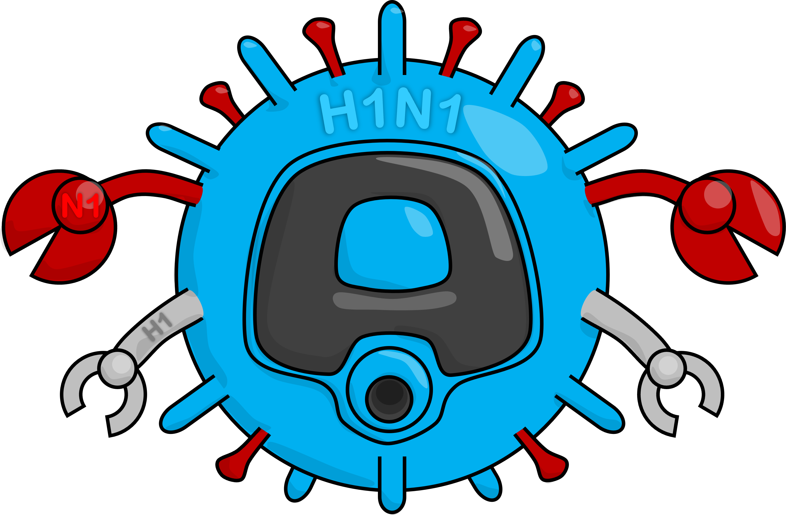
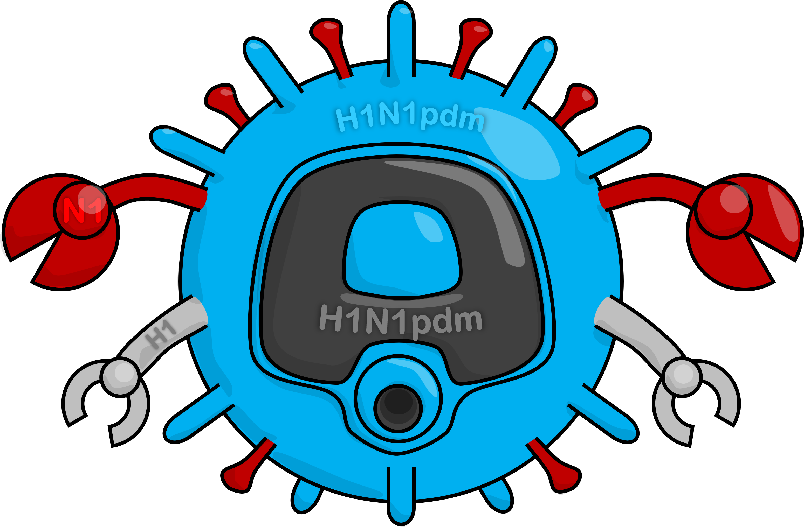
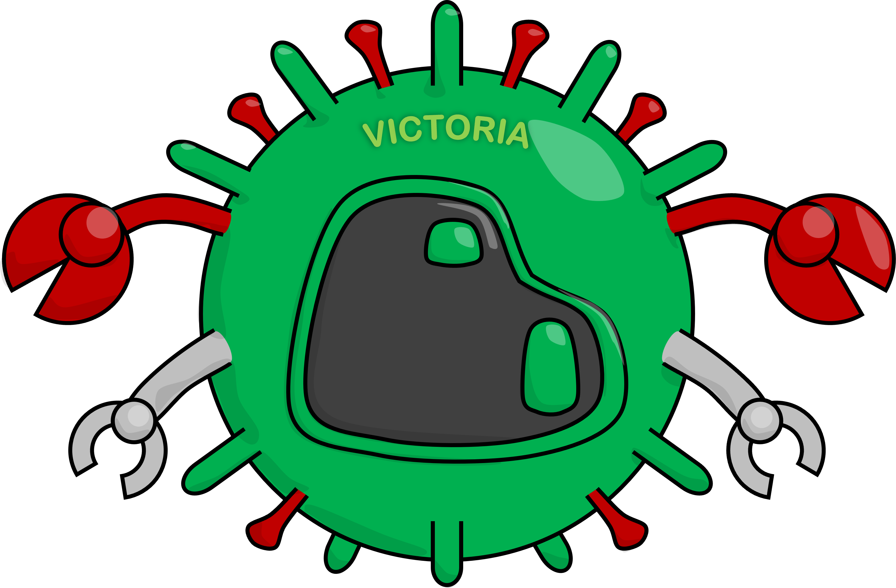

毎年冬に流行する「インフルエンザ」。風邪とどこが違うの？どうして毎年ワクチンを打つの？わかりやすく解説します。
インフルエンザウイルスの構造、A型（H1N1pdm・H3N2）・B型（ビクトリア系統）の特徴、診断法と抗ウイルス薬を解説します。
HA/NA機能、抗原変異（drift/shift）、H1N1pdmの病原性特性、NAAT vs 迅速抗原検査の性能、NA阻害薬耐性機序（H275Y/PA-I38T）を概説する。

インフルエンザはウイルスが原因の感染症です。細菌ではないので、抗菌薬（抗生物質）は効きません。
インフルエンザウイルスの表面には2種類の重要なタンパク質が生えています。
ウイルスが人の細胞にくっつくための「カギ」。このカギが細胞の「カギ穴」にはまると感染が始まります。
感染した細胞の中で増えたウイルスが外に出るためのハサミ。タミフルなどはこのハサミを止める薬です。
最も変化しやすい型。パンデミック（世界的大流行）を起こすことがある。毎年流行の主役。
A型より変化が少ない。主に子どもに多い。症状はA型と似ている。
症状が軽い。ほとんどの人がかかったことがある。流行はしにくい。
オルソミクソウイルス科に属するRNAウイルス。エンベロープ（脂質二重膜）を持つ。表面タンパク質のHAとNAがウイルスの病原性・ワクチン設計の鍵を担う。
宿主細胞のシアル酸受容体に結合して侵入。ウイルス亜型の決定因子。ワクチン主要抗原。H1〜H18まで存在（ヒト感染：H1・H3・H2）。
シアル酸を切断してウイルスを放出。NA阻害薬（オセルタミビル等）の標的。N1〜N11まで存在（ヒト感染：N1・N2）。
インフルエンザAウイルスは8分節の一本鎖マイナス鎖RNA（ssRNA−）ゲノムを持つ。各セグメントがRNPを形成（RNA+NP+ポリメラーゼPB1/PB2/PA）。エンベロープに HA（約500本）・NA（約100本）・M2イオンチャネル（少数）が挿入される。
HAはI型膜貫通タンパク質のホモ三量体。HA1サブユニットがα2,6-シアル酸（ヒト気道）またはα2,3-シアル酸（鳥気道）受容体に結合→膜融合→RNP核内移行→複製。NAはテトラマー型シアリダーゼ。分節RNAゲノムが異なるウイルス間での再集合（reassortment）を可能にし、抗原シフト（antigenic shift）の分子基盤となる。
RNAポリメラーゼの校正機能欠如による点変異の蓄積。毎年のウイルス変化の主因。ワクチン抗原の毎年更新が必要な理由。
異なるHA/NAを持つウイルス間の再集合（reassortment）によるHA/NA亜型の突然変化。パンデミックの原因（例：2009年H1N1pdm）。ヒト集団に免疫がない場合に世界的大流行。

2009年のパンデミック（世界的大流行）で登場。「pdm」は pandemic（パンデミック）の略。今も毎年流行する主役のひとつ。
若い人や基礎疾患がある人が重症化しやすいことがある。
1968年の「香港かぜ」から続く型。高齢者が重症化しやすい傾向がある。毎年流行し、A型の中でも変化しやすい。
2009年に豚由来のH1N1が抗原シフトにより出現し、世界的パンデミックを引き起こした（WHO Phase 6）。HA遺伝子がそれまでの季節性H1N1と大きく異なるため、高齢者を除くヒト集団に既存免疫がほとんどなかった。
特徴的な疫学的特性：若年層・肥満者・妊婦・基礎疾患者に重症例が多く、65歳以上高齢者では比較的軽症（過去の季節性H1N1由来の交差免疫が存在）。2010年以降は季節性インフルエンザとして毎冬流行。
2009年 A(H1N1)pdm09は4種のウイルス（北米豚インフルエンザ・ユーラシア豚インフルエンザ・ヒト季節性・鳥由来）のHAセグメントを含む四重再集合体（quadruple reassortant）。HA蛋白は1918年スペインインフルエンザに系統的に近縁であり、1957年以降生まれの世代に既存免疫が少ない。
病原性の分子基盤：PA-X蛋白による宿主免疫抑制（季節性H1N1より弱い）・PB1-F2の多型（97N型は低病原性）。肺胞II型細胞へのトロピズム（α2,6-シアル酸発現）が下気道炎・ウイルス性肺炎と関連。肥満者での重症化はアディポカインによる炎症増幅・肺容量減少が寄与。

B型インフルエンザはA型より変化がゆっくりで、特に子どもに多い傾向があります。以前は「山形系統」と「ビクトリア系統」の2種類がありましたが、現在は山形系統が消滅し、ビクトリア系統のみが流行しています。
B型ウイルスはA型と異なりHAのサブタイプ分類がなく、系統（lineage）で分類される。かつては山形（Yamagata）系統とビクトリア（Victoria）系統の2系統が共存していたが、COVID-19パンデミック期の感染対策の影響で、山形系統は2020年以降検出されなくなり、事実上消滅した。現在はビクトリア系統のみが流行している。
現在唯一流行中の系統。小児に多い傾向。季節性ワクチンに含まれる。A型より変異速度が遅く、ワクチン株ミスマッチが起きにくい。
2020年以降、世界的に検出なし。2024-25年からのWHO推奨ワクチン（4価→3価移行）では除外されている。
B型ウイルスはHAのサブタイプ分類がなく（HAは1種類）、HAおよびNA遺伝子の系統差で山形・ビクトリアに二分されていた。ビクトリア系統はB/Victoria/2/87に、山形系統はB/Yamagata/16/88に系統的に由来。両系統のHA間のアミノ酸同一性は約95%。抗原ドリフトはA型より遅く、毎年のワクチン更新頻度が低い。
山形系統の消滅：COVID-19期の非薬物的介入（マスク・渡航制限・社会的距離）により季節性インフルエンザの世界的伝播が激減。この過程でYamagata系統の最終確認株は2020年3月（B/Phuket/3073/2013系統）。2024-25年シーズンよりWHOは3価ワクチン（A/H1N1pdm+A/H3N2+B/Victoria）を推奨、Yamagata成分を除外。
⚡ 突然38°C以上の高熱
💪 筋肉痛・関節痛が強い
😫 ひどい倦怠感
🤧 咳・のどの痛み
❄️ 悪寒・頭痛
🌡️ 熱は軽め or なし
💪 筋肉痛は軽い
🤧 鼻水・くしゃみが多い
😊 全身症状が比較的軽い
⏱️ 徐々に始まる
突然の高熱（38.5°C以上）・頭痛・筋肉痛・倦怠感が先行し、遅れて上気道症状（咳・咽頭痛）が出現。潜伏期1〜4日（平均2日）。
ウイルス性肺炎：重症例（とくにH1N1pdm）。急速に進行する低酸素血症。
細菌性二次肺炎：肺炎球菌・黄色ブドウ球菌（MRSA含む）が主要起炎菌。発熱の二峰性が目安。
主に小児（5歳以下に多い）。発熱後24〜48時間以内に意識障害・けいれん・異常行動。MRI所見（両側視床・白質病変等）が特徴的。ADEM・急性壊死性脳症（ANE）が重症型。
ウイルス性肺炎：A(H1N1)pdm09のα2,6シアル酸親和性により肺胞II型細胞・気管支上皮への直接感染→サイトカインストーム（IL-6・TNF-α・IFN-γ）→ALI/ARDS。H3N2では比較的上気道優位だが高齢者では細菌性二次肺炎リスク増大。
インフルエンザ脳症：ウイルスの直接神経侵潤よりサイトカイン介在性血液脳関門破綻が主機序とされる。ANE（acute necrotizing encephalopathy）はRANBP2遺伝子多型（p.Thr585Met）との関連が報告。NSAIDs（ジクロフェナク等）との関連も示唆（日本）→インフルエンザへのNSAIDs使用は原則回避。
| 検査法 | 感度 | 特異度 | TAT | 推奨場面 |
|---|---|---|---|---|
| 迅速抗原検査（RIDT） | 40–80% | >90% | 10–15分 | 外来スクリーニング。陰性でも除外不可 |
| 迅速分子検査（RMAT） | >95% | >99% | 15–30分 | 外来・小児で推奨。RIDTより優先 |
| 標準RT-PCR | >95% | >99% | 1–8時間 | 入院患者・亜型判定・サーベイランス |
| 多重パネル（FilmArray等） | 高い | 高い | 1–2時間 | インフル＋SARS-CoV-2＋RSV等同時検出 |
| 培養 | 中程度 | 高い | 3–10日 | 臨床には不向き。ウイルス性状解析・サーベイランス用 |
Miller et al.（CID 2024 IDSA/ASM）はNAATをインフルエンザ診断のゴールドスタンダードと位置づける。RIDT（感度40–80%）の陰性はNAATによる確認が必要（特に流行期・入院患者・重症リスク例）。RMATは外来でRIDTに優先して使用（AAP 2025）。
Bell et al.（Influenza Other Respir Viruses 2023）：発症1日目が最高感度（約84%）→以降急速低下。検体は鼻咽頭ぬぐい液が最高感度（anterior nasal swabより優位）。SARS-CoV-2同時流行期は多重NAATs（インフル+COVID-19+RSV）を積極的に選択。
Han et al.（Biomed Res Int 2020）：RIDT のROC解析でSeroC AUC=0.91（デジタルリーダー使用）vs 目視判定0.82。アナライザー使用で感度改善。偽陽性リスクは低流行期・オフシーズンに増大（事前確率依存）。
インフルエンザはウイルスが原因なので、抗菌薬（抗生物質）は効きません。代わりに「抗ウイルス薬」を使います。
ウイルスが細胞から出られなくし、感染の広がりを抑える
ウイルスのRNA合成を止める新しい作用機序
NAのシアリダーゼ活性を競合阻害→ウイルス放出を抑制。発症48時間以内の投与で解熱期間短縮（平均1〜2日）・合併症予防。A型・B型両方に有効。
オセルタミビル耐性：H275Y変異（N1型）。季節性H1N1で2007〜09年に広域流行したが現在は減少。H1N1pdmでは散発的。
ウイルスのキャップ依存性エンドヌクレアーゼ（PA蛋白）を阻害→mRNA合成停止。1回内服で治療完了。
耐性：PA-I38T変異が主要耐性変異。小児・ウイルス量が多い例で選択されやすいため注意。
NA阻害薬：シアル酸類似体がNAの活性部位（E119・R292・R371等の保存残基）に競合結合→シアル酸切断不能→ウイルス放出阻害。H275Y変異（N1番号：H274Y, N2番号）はオセルタミビルのアジロール基との立体障害を引き起こしIC₅₀を数百〜千倍上昇させるが、ザナミビル感受性は保持。2007〜09年に耐性H1N1の世界的拡散（oseltamivir-resistant A/Brisbane/59/2007-like）→現在のH1N1pdmでは散発。
バロキサビル：PAサブユニットのPAN（エンドヌクレアーゼドメイン）に結合→キャップ依存的転写開始（cap-snatching）阻害→ウイルスmRNA合成停止。PA-I38T変異（一部I38F/M/S/L）が耐性の主因。HA-I222V等の複合変異がさらに耐性を増強する場合がある。小児・免疫不全者・ウイルス量の多い症例で変異株の選択圧が高まるため、重症例ではNA阻害薬との併用を検討する場合がある。
インフルエンザウイルスは毎年少しずつ形を変える（抗原変化）ので、去年のワクチンは今年に効きにくくなっています。さらに、ワクチンの効果も時間とともに下がります。だから毎年打つ必要があります。
毎年WHOが南北半球それぞれの推奨株を発表し、製造各社が対応ワクチンを製造。2024〜25年より3価ワクチン（A/H1N1pdm+A/H3N2+B/Victoria）が標準となった（B/Yamagata消滅に伴い4価から移行）。
ウイルス株がワクチン株に一致する年は有効率60〜70%。ミスマッチ時は20〜40%程度に低下することがある（H3N2でミスマッチが起きやすい）。重症化・入院予防効果は発症予防より高い。
10〜11月頃の接種が推奨（効果発現まで2週間）。13歳未満は2回接種。高用量・アジュバント入りワクチン（高齢者用）で免疫原性向上。
現行インフルエンザワクチン（不活化ウイルスワクチン）の主要抗原はHA。中和抗体はHA頭部（高度可変）を主標的とするため、抗原ドリフトによるミスマッチが有効性低下の主因。細胞培養ワクチン（Flucelvax）・組換えHAワクチン（Flublok）は鶏卵培養でのHA適応変異を回避し有効性改善が期待される。
次世代ユニバーサルワクチン：HAステム領域（高度保存・亜型間共通）を標的とする抗体産生を誘導するコンセプト。NAを抗原に加えることで交差防御範囲を拡大する戦略も研究中。mRNAワクチンプラットフォームのインフルエンザ応用（製造の迅速化・免疫原性改善）が臨床試験段階（Moderna・Pfizer-BioNTech）。
「インフルエンザ菌」（Haemophilus influenzae）という細菌がいますが、これはインフルエンザとはまったく別物です！
昔のインフルエンザ流行時に患者から多く見つかったため「インフルエンザの菌だ」と誤解され、この名前がついてしまいました。後にインフルエンザの原因はウイルスだとわかりましたが、名前はそのまま残りました。
| インフルエンザ | インフルエンザ菌 | |
|---|---|---|
| 正体 | ウイルス | 細菌（H. influenzae） |
| 治療 | 抗ウイルス薬 | 抗菌薬 |
| ワクチン | インフルエンザワクチン | Hibワクチン |
| 主な病気 | インフルエンザ | 髄膜炎・肺炎・中耳炎 |
グラム陰性短桿菌。莢膜の有無によって莢膜型（a〜f型）と無莢膜型（NTHi）に分類。Hib（b型）はワクチン導入前、乳幼児の細菌性髄膜炎・喉頭蓋炎の主要原因菌だった。
乳幼児の細菌性髄膜炎・喉頭蓋炎・菌血症の主要原因。Hibワクチン（PRP-T/PRP-OMP）導入後、先進国では激減。日本では2008年定期接種化。
成人の慢性気道感染・中耳炎・副鼻腔炎・市中肺炎（COPD増悪）の重要な原因菌。Hibワクチンは効果なし。β-ラクタマーゼ産生耐性が問題。
Hib（血清型b）は莢膜多糖（PRP：ポリリボシルリビトールリン酸）が主要病原性因子→貪食回避・補体活性化抵抗。PRP-T/PRP-OMP結合型ワクチンによりHib髄膜炎はワクチン導入国でほぼ消滅（日本では2008年以降激減）。
NTHi耐性：β-ラクタマーゼ産生（TEM-1型）によるアンピシリン耐性（日本50〜70%）、β-ラクタマーゼ非産生アンピシリン耐性（BLNAR）：ftsI（PBP3）遺伝子変異によるPBP3への親和性低下。日本ではBLNAR率が国際的に高く（20〜30%）問題。治療はAMPC/CVA、CDTR、CST等を選択。